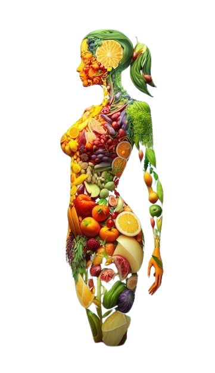

Consumă mai întâi alimente bogate în fibre, apoi proteine și grăsimi, iar la final optează pentru amidon și carbohidrați.
Poți include orice tip de legume ca aperitiv, chiar și cele care nu sunt verzi, precum morcovii, roșiile, și chiar și leguminoasele (năut, linte etc). Încearcă să consumi o cantitate de legume echivalentă cu cea a alimentelor bogate în amidon.
Sănătatea și pierderea în greutate depind mai mult de tipul de molecule pe care le consumi, decât de numărul total de calorii.
Un mic dejun ideal include, în principal, proteine, fibre și grăsimi, iar opțional, amidon și fructe (care ar trebui consumate la final).
Dacă preferi un mic dejun dulce, începe cu alimentele sărate înainte de a consuma dulciuri. Optează pentru ceva care conține proteine, grăsimi și fibre, cum ar fi un ou sau câteva linguri de iaurt gras, și abia apoi treci la opțiunile dulci, cum ar fi cerealele, ciocolata, granola, mierea sau siropurile. Cele mai bune alegeri în ceea ce privește fructele includ fructele de pădure, citricele și merele verzi acrișoare.
Cei mai buni îndulcitori care nu au efecte secundare asupra nivelurilor de insulină și glucoză sunt următorii: aluloza, fructul călugărului, stevia (extract pur) și eritritolul.
Momentul ideal pentru a savura ceva dulce este după ce ai consumat deja alimente bogate în grăsimi, proteine și fibre.
Într-un pahar mare cu apă, adaugă o lingură de oțet de mere (5% aciditate) și consumă-l ideal cu 20 de minute înainte de masă. De asemenea, poți să-l bei și în timpul mesei sau la mai puțin de 20 de minute după ce ai terminat de mâncat.
Pentru a menține un nivel glicemic sănătos, ieși la o plimbare de cel puțin 10 minute după fiecare masă. Orice formă de activitate fizică este benefică, atâta timp cât este efectuată în decurs de 70 de minute de la terminarea mesei.
Dacă simți nevoia de un plus de energie, optează pentru o gustare sărată, dar săracă în amidon. De exemplu, poți alege 200g de iaurt grecesc 5% amestecat cu o mână de nuci pecan, felii de măr cu o bucată de brânză, sau biscuiți sărați cu semințe și o felie de brânză.
Indiferent dacă alegi o gustare sărată sau dulce, începe întotdeauna prin a consuma proteine, grăsimi sau fibre, și abia apoi gustarea.
Dacă consumi carbohidrați precum paste, orez, pâine, cuscus, mămăligă, porumb, lipie, chec, batoane de ciocolată, fulgi de cereale, biscuiți dulci, fursecuri, fructe, musli cu fructe și nuci, înghețată, ciocolată caldă sau orice altceva dulce, combină-i cu fibre, grăsimi și/sau proteine: legume, avocado, smântână, unt, brânză, iaurt gras, ouă, carne, pește, fasole, nuci, alune sau semințe.
Așteaptă 20 de minute și vezi dacă pofta dispare.
Dacă pofta nu dispare, mănâncă dulcele ca desert la următoarea masă principală. Între timp bea o cană de ceai din rădăcină de lemn-dulce sau mentă, adaugă o lingură de ulei de cocos în cafea, bea o cană de zeamă de la murături, bea un pahar mare de apă în care să dizolvi un praf generos de sare, mănâncă o gumă de mestecat, spală-te pe dinți sau ieși la o plimbare.
Dacă toate cele de mai sus nu funcționează, bea un pahar mare de apă amestecat cu o lingură de oțet de mere. Apoi mănâncă un ou, o mână de nuci sau de alune sau două linguri de iaurt grecesc cu 5% grăsime, iar dulcele pe care îl poftești mănâncă-l la final. Și nu uita în următoarea oră să faci orice tip de mișcare timp de 10 minute.
Băuturile alcoolice care mențin glicemia stabilă sunt vinul (roșu, alb, rose, spumant) și tăriile (gin, votcă, tequila, whiskey și rom). Bea acestea cu gheață, cu apă minerală sau cu sifon ori cu suc de lămâie sau limetă.
Dacă vrei să ronțăi ceva, alege alunele sau măslinele.